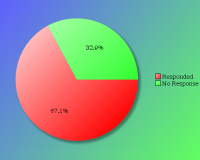
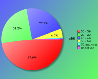
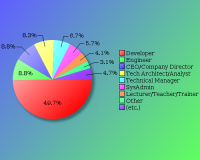
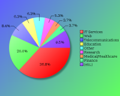
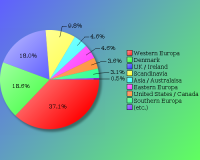

YAPC::Europe 2008 - Survey Results
The following survey results are a simple presentation of the raw data.
No attempt has been made to analyse the data and compare with previous
years. See forthcoming PDFs for more in depth analysis.
Click on pie charts to view larger image version.
Demographics (required)
These questions will help us understand who our attendees are.
Attendees

| Count | Description |
|---|
| 192 | Responded |
| 94 | No Response |
| 286 | Total |
| 67% | Response Percentage |
Age Band:

| Count | Description |
|---|
| 1 | under 20 |
| 47 | 20 - 29 |
| 93 | 30 - 39 |
| 43 | 40 - 49 |
| 9 | 50 - 59 |
| 1 | 60 and over |
Job Type:
If your position covers many roles, please base this on your most senior responsibility:

| Count | Description |
|---|
| 17 | CEO/Company Director/Senior Manager |
| 0 | Non-Technical Manager |
| 13 | Technical Manager |
| 16 | Technical Architect/Analyst |
| 96 | Developer |
| 17 | Engineer |
| 11 | SysAdmin |
| 4 | Student |
| 8 | Lecturer/Teacher/Trainer |
| 1 | Human Resources |
| 3 | Researcher |
| 1 | Unemployed |
| 6 | Other |
If 'Other' please enter your professional job role or title:
- + Consultant
- Fix-o-tron
- Freelance Translator
- Information Manager
- MScEE,BBA, consultant
- QA Engineer
- Senior Claims Advisor (Marine)
- Technical Director - hence tech manager -and- architect -and- developer -and- sometimes PM
Industry:

| Count | Description |
|---|
| 1 | Automotive |
| 12 | Education |
| 2 | Engineering |
| 7 | Finance |
| 5 | Government |
| 70 | IT Services |
| 0 | Legal |
| 4 | Media/Entertainment |
| 7 | Medical/Healthcare |
| 1 | Logistics |
| 3 | Retail |
| 16 | Telecommunications |
| 12 | Travel |
| 38 | Web |
| 1 | Property |
| 10 | Research |
| 1 | Unemployed |
| 12 | Other |
If 'Other' please enter your industry sector:
- all of them! this should be a multiple. OK, let's say it services, web, entertainment, telecommunications
- Bio Tech
- Bioinformatics
- Biotech
- chip industry
- Communication
- Fashion
- Insurance Broking
- Internet
- Marketing
- Selfemployed with different tasks in parallel
- Software Development
- Software/Virtualization
Region:
Please note this is the region you were a resident in, prior to attending the conference.

| Count | Description |
|---|
| 36 | Denmark |
| 19 | Scandinavia |
| 35 | UK / Ireland |
| 72 | Western Europa |
| 9 | Eastern Europa |
| 6 | Southern Europa |
| 7 | United States / Canada |
| 9 | Asia / Australaisa |
| 0 | South America |
| 1 | Africa |
The Perl Community, YAPCs & Workshops
These questions will help us understand our attendees involvement in the Perl community.
How do you rate your Perl experience?
| Count | Description |
|---|
| 2 | I am new to Perl |
| 15 | I have used Perl a little |
| 95 | I have used Perl a lot |
| 82 | I am a Perl expert |
How many previous YAPCs have you attended?
| Count | Description |
|---|
| 67 | This was my first YAPC |
| 352 | YAPC::Europe |
| 84 | YAPC::NA |
| 18 | YAPC::Asia |
| 9 | YAPC::Australia / OSDC::Australia |
| 10 | YAPC::Israel / OSDC::Israel |
| 3 | YAPC::Russia |
| 0 | YAPC::SA / YAPC::Brazil |
How many Perl Workshops have you attended?
| Count | Description |
|---|
| 74 | Never attended one |
| 24 | Austrian Perl Workshop |
| 27 | French Perl Workshop |
| 118 | German Perl Workshop |
| 11 | Italian Perl Workshop |
| 55 | London Perl Workshop |
| 35 | Netherlands Perl Workshop |
| 78 | Nordic Perl Workshop |
| 7 | Portuguese Perl Workshop |
| 5 | Ukrainian Perl Workshop |
Do you plan to attend a future YAPC/Workshop?
| Count | Description |
|---|
| 163 | Yes |
| 25 | Maybe |
| 4 | Don't Know |
| 1 | No |
If 'No', could you tell us why?
Particularly if this is your first YAPC, we would like to understand why you would not be able or interested in attend another event like it.
- For some reason the (London) Workshops always clash with a previous engagement. I plan to attend one day, when it doesn't :)
- I was there as a sponser and participating at the jobfair. I'm not an IT guy, so the workshops are not for me.
- I would like to participate again, but most likely I would have to travel abroad and have my employer fund the trip.
- Let me answer on behalf of 5 persons I know who came to a Perl YAPC/Workshop, never to return again in such a conference.
They were all Perl users. They all found that these conferences are, to a large extent, more for people working *on* Perl, rather than people working *with* Perl.
The shock was such, that they simply didn't come back.
Are you a member of a local Perl Mongers user group?
| Count | Description |
|---|
| 126 | Yes |
| 66 | No |
If 'No', do you plan to find one or start one?
| Count | Description |
|---|
| 10 | Yes |
| 21 | Maybe |
| 18 | Don't Know |
| 27 | No |
What others areas of the Perl Community do you contribute to?
| Count | Description |
|---|
| 50 | I have a use.perl journal |
| 79 | I use PerlMonks |
| 61 | I contribute to other Perl forums |
| 63 | I contribute to Perl mailing lists (eg P5P, Perl QA, etc) |
| 105 | I'm a CPAN Author |
| 36 | I'm a Perl project developer (eg Perl6, Parrot, Catalyst, TAP, etc) |
| 14 | I'm a CPAN Tester |
| 23 | other ... |
- active member of Paris.PM
- comp.lang.perl.misc; #p5p/#perl
- contribute to our Perl Mongers site
- debian-perl group!
- freebsd ports
- http://perl-nachrichten.de, http://perl-magazin.de
- I am user of perl not currently a developer
- I blog about Perl
- I donate money, organize Perl workshops and Perl Mongers meetings
- I have a Perl blog
- I organize the Italian Perl Workshop
- I speak at conferences and organize a few (like next year's YAPC::EU O:-)
- I suck!
- IRC
- IRC! blog that sucks less than use.perl!
- newsgroups
- none
- organizer of Perl Workshop
- perl5 comitter
- TPF/YEF member
YAPC::Europe 2008
Regarding YAPC::Europe 2008 in Copenhagen specifically, please answer the following as best you can.
When did you decide to come to this conference?
| Count | Description |
|---|
| 77 | I'm now a regular YAPC::Europe attendee |
| 33 | After YAPC::Europe::2007 in Vienna |
| 0 | After joining Facebook event |
| 27 | After seeing promotions online/in the press |
| 19 | I was nominated to attend by manager/colleague |
| 37 | other ... |
- 4 months before
- After a friend told me YAPC::Europe::2007 was so cool :)
- After YAPC::2006, I knew I'd attend YAPC::EU again some time. I missed 2007, so here I was
- Company I work for would pay for the trip
- Member of Copenhagen.pm
- Have wanted to for a long time, but never really able to
- I live in Copenhagen
- I was asked to publish
- I was informed by my collegue who participated in the jobfair before
- Invitation
- Just felt like it
- Mailing list messages
- Nordic Perl Workshop
- Planned to attend another YAPC for years now.
- Recommended by a friend
- Recommended by DKUUG/SSLUG
- Saw that the timings were in line with my vacations
- Tried to go to YAPC since about 5 years. I manged it this year. Yeah!
- Wanted to see what it was like after going to YAPC::NA
- When I found out it was a local event
- when I had to cancel going to YAPC::Europe::2007
- When I learned it was going to be in Copenhagen
- When I saw I can do it
- When I saw it on the Interwebs
- When it was announced to be in Copenhagen
- When we became a sponsor
- Word of mouth
Were you a speaker?
| Count | Description |
|---|
| 99 | No |
| 37 | No, but I have spoken before at similar conferences |
| 46 | Yes, and I have spoken before at similar conferences |
| 10 | Yes, and it was my first time as a speaker |
Note that "similar conferences" includes other YAPCs, as well as Linux, Open Source or large technical events such as workshops.
If you weren't a speaker, would you consider speaking at a future conference?
| Count | Description |
|---|
| 86 | Yes |
| 19 | No |
| 36 | Ask me later |
What was your motivation for coming?
| Count | Description |
|---|
| 84 | the list of speakers |
| 79 | the quality of the talks scheduled |
| 38 | to be a speaker |
| 117 | to meet with Perl/project co-contributors |
| 154 | to socialise with Perl geeks |
| 45 | to meet Larry Wall |
| 48 | to meet Damian Conway |
| 73 | to see Copenhagen |
| 16 | other ... |
- Because I have attended all previous YAPC Europe
- Become part of the community
- Curiosity
- FUN in general, gathering new ideas
- Headhunting
- Learn something
- Negotiate about bugs & features with authors, and about other things I need and plan to do
- Tempting tutorials!
- The fact that it was local and cheap, good value for money
- The subjects covered by the talks
- To buy things at the auction and at the O'Reilly bookstand
- To participate at the jobfair
- To see other YAPCs
- To visit a YAPC "near" me
- Work paid for it and it's fun, plus and incidentally I get to meet other Perl hackers
- YAPC is just fun :)
What aspects of the conference do you feel gave value for money?
| Count | Description |
|---|
| 170 | the talks / speakers |
| 9 | the conference bag |
| 54 | the tshirt |
| 9 | the job fair |
| 103 | the conference dinner |
| 100 | the conference venue |
| 69 | the city of Copenhagen |
| 61 | the hallway track |
| 127 | the attendees |
| 16 | other ... |
- Bag? which bag?!?
- Beer
- BOFs
- Damian
- Larry / Damian
- Lunch
- Metro
- The attendees, the attendees, your great job as an organizer
- The catering / coffee / lunches
- The food
- The pre-conference meeting
- The Tattooed Widow
- Tutorials
- Which conference bag?
Did you have holiday planned around your conference attendance?
| Count | Description |
|---|
| 99 | I came just for the conference |
| 12 | several days before only |
| 16 | 1 day before only |
| 24 | several days before and after |
| 22 | 1 day after only |
| 16 | several days after only |
Were there any talks you want to see, but missed??
| Count | Description |
|---|
| 90 | Yes |
| 93 | No |
If 'Yes', which talks did you miss?
The following are based on the number of mentions each talk got in all the submitted comments.
| Count | Description |
|---|
| 13 | Juerd Waalboer - Unicode Best Practices |
| 9 | Aaron Crane - Faster Regexes: What to do when text matching is your bottleneck. |
| 9 | JJ - The Camel and the Snake |
| 8 | Jesse Vincent - Step 3: Prophet - A peer to peer replicated property database |
| 8 | Smylers - HTML 5: What's that all about? |
| 8 | Paul Johnson - Effective Code Coverage |
| 7 | Barbie - Understanding Malware |
| 7 | Mike Fragassi - Perl Logging Practices |
| 7 | Dave Cross - Proud to Use Perl |
| 7 | Jesse Vincent - Everything but the secret sauce |
| 6 | Leo Lapworth - Evolving Architecture - Further |
| 6 | Smylers - When MySQL Bites: Quirks to Watch Out For |
| 6 | Edmund von der Burg - Modifying databases - changing the schema in a controlled way |
| 6 | Philippe Bruhat - Perl (secret) operators |
| 6 | Abigail - Regexp::Common, the next generation |
| 5 | Adam Kennedy - Nothing Can Possibly Go Wrong... Again |
| 5 | Dave Cross - Ye Compleat History of Ye Perle Mongers of Olde London Towne (Part 1) |
| 5 | Chia-liang Kao - Branch Management with SVK |
| 5 | Nuno Carvalho - Is Your Script Fast Enough |
| 5 | Dmitry Karasik - IO::Lambda - async I/O shouldn't be that complex |
| 4 | Marcus Ramberg - Building Catalyst apps on the Amazon Web Service Platform |
| 4 | Chia-liang Kao - prototype::signatures, |
| 4 | Patrick Michaud - Building Compilers with the Parrot Compiler Toolkit |
| 4 | Abigail - Regexp mini tutorial: Character Classes |
| 4 | H.Merijn Brand - Speed up Text::CSV_XS |
| 4 | Nadim Khemir - AsciiO version 1.0 |
| 4 | Adam Kennedy - Tiny |
| 4 | Patrick Michaud - Rakudo: Perl 6 on Parrot |
| 4 | Léon Brocard - Working in the cloud |
| 4 | Mark Overmeer - From XML Schema to Application |
| 4 | Tara Andrews - 101011 manuscripts: Perl and the Chronicle of Matthew of Edessa |
| 3 | Jonathan Rockway - Moose Introduction |
| 3 | Marcus Ramberg - Web Services with OAuth |
| 3 | Mike Astle - Profiling Modules - A Survey |
| 3 | Jonathan Worthington - Putting Types To Work In Perl 6 |
| 3 | Léon Brocard - 10 modules I haven't yet talked about |
| 3 | Adam Bartosik - do { "TDD and refactoring" } or die "trying" |
| 3 | Wolfgang Laun - Generate and Execute: A Paradigm for Perl Programs |
| 3 | JJ - Perl at the Microsoft Scripting Games 2008 |
| 3 | Erwan Lemonnier - Pragmatic Contract Programming in Perl |
| 2 | Matt Trout - DBIx::MasterClass |
| 2 | All Perl 6 talks, |
| 2 | Herbert Breunung - WxPerl beyond Frames and Buttons |
| 2 | Daniel Ruoso - Perl 6 is just a SMOP |
| 2 | brian d foy - Indexing BackPAN |
| 2 | Adam Kennedy - Strawberry Perl - Achieving Win32 Platform Equality |
| 2 | Lars Jorgensen - Making (large) legacy systems beautiful |
| 2 | Michael Zedeler - Stream oriented processing with DSlib |
| 2 | Thomas Klausner - CPANTS |
| 2 | Jonathan Rockway - Describing classes with Ernst |
| 2 | Roman Parparov - Computer working by itself - Beautiful, isn't it |
| 2 | Thomas Klausner - die Perl, die! |
| 2 | Philippe Bruhat - Messing with Git History using Git::FastExport |
| 2 | Chris Williams - Rough Guide to CPAN Testing |
| 2 | Steffen Mueller - Application deployment and dependency management with PAR |
| 1 | Dave Cross - Perl in RPM-Land |
| 1 | mtm - Low maintenance data integration (ETL) |
| 1 | Mark Overmeer - CPAN6 progress |
| 1 | Stefan Hornburg - Interchange - The Open Source Online Shop Platform |
| 1 | Lars Dieckow - From an idea to CPAN |
| 1 | Adam Kennedy (Alias) - Strawberry Perl |
| 1 | Alex Kapranoff - Perl inside Nginx |
| 1 | Andrew Shitov - How to make Google Books at home |
| 1 | Matt Trout - Elegant^Elegant: Web application metaprogramming with Reaction |
| 1 | Strawberry Perl - Achieving Win32 Platform Equality |
| 1 | Uri Bruck - Perl in Software Art |
| 1 | Darko Obradovic - CoSAIR.org - Making of a Game AI Programming Platform |
| 1 | Jeremiah Foster - The debian - CPAN interface |
| 1 | Alberto Simões - TPF Grants Committee, |
| 1 | Andrew Johnson - Asynchronous Distributed Job Processing with Helios |
| 1 | Yusuke Kawasaki - DOM manipulation by Gainer/Wiimote over HTTP |
| 1 | Josh McAdams - Open Flash Chart and Perl |
There are always conflicts in the schedule, as it's difficult to know what everyone would like to see. However, if you could list a few talks that you missed, it would give speakers an idea whether they would be worth updating their talks for furture events.
Where there any speakers not present you were hoping would be at the conference?
| Count | Description |
|---|
| 48 | Yes |
| 128 | No |
If 'Yes', which speakers?
The following are based on the number of mentions each speaker got in all the submitted comments.
| Count | Description |
|---|
| 14 | Audrey Tang, Mark Jason Dominus |
| 5 | Yuval Kogman |
| 4 | Michael Schwern, Tim Bunce |
| 3 | Randal Schwartz, Marty Pauley, chromatic, Greg McCarroll, Yves Orton |
| 2 | "Mock" aka Will Whitaker, Ingy, Tatsuhiko Miyagawa |
| 1 | Sam Vilain, Johan Vromans, Allison Randal, Richard Foley, Simon Cozens, Leopold Toetsch, Dave Rolsky, Lincoln Stein, Aligator Decartes, Tom Christiansen, Nat Torkington, Gisle Aas, Graham Barr, Paul Kulchenko, Nicolai Langfeldt, Michael Schilli, Jeff Horwitz, Ken Williams, Rafael Garcia-Suarez, Chip Salzenberg, Paul Fenwick, Jonathan Rockway, Stevan Little
|
What kinds of talks would you prefer at future conferences?
| Count | Description |
|---|
| 13 | More beginner level talks |
| 21 | More intermediate level talks |
| 43 | More expert level talks |
| 89 | It's about right |
| 24 | No preference |
Are there any topics you would specifically like to see featured?
- - localisation and internationalisation
- high performance computing
- security
- fast string matching
- advanced regular expressions
- A beginner's track
More serious talks
- A session for "Rookie Lightning Talks" and possible a 45 minute block with several 10 minute talks for first time speakers. Need a real beginner track, including the usual topics like how to build a module for CPAN. The speakers can change every year, but these simple topics should endure as they can be very important at the right point in a programmers life.
- Although I prefer expert level talks, I'd really like to see a beginner level track - not for me, I'll probably attend no matter which talks, but for attracting perl "novices" who feel scared to go at the moment.
- Beginners Track is a good idea, but as many attendees are experts it would be also nice to learn about teaching perl
Best/Worst Practices
Making CPAN modules - as there are now several ways to build one and META.yml is still developing, module-beginners need help with that
- Corporate Perl for next years YAPC::Europe sounds interesting.
- Distributed programming with perl tools
- Examples of big, real life applications composed from "mainstream" components (Catalyst, DBIx::Class, ...) - architectural decisions, naming conventions, ..
- Generating code during runtime. Emulating macros. Opcode hacking.
- I would like to see more experts making intermediate/expert level talks, rather than fun talks.
- I would prefer more in-depth talks instead of beginner talks - or in addition to!
- Interfacing with other programming languages.
- Introductions to other programming languages, from a Perl point of view.
- Mapping/Geospatial related?
- Mashups
- More advanced Web topics
- More functional programming
- more success stories, and less perl syntax talks
- More talks about testing
- MULDIS D
- Natural Language Processing, PDL
- None that spring to mind - a wide range of ideas usually get covered.
Maybe a longer Ovid-testing presentation?
- OO - What are objects, classes, prototypes and how to use them
- Open Source Community Management
- Parellelization
Computing clouds and clustering
- Perl use in system administration
(I hope forthcoming YAPC in Lisbon, as being dubbed "Corporate Perl", may cover some of this),
in the same vein, Perl use for Monitoring (like by Nagios/Munin, SNMP etc. plug-ins),
Perl use in Engineering (does anyone do this at all? because I haven't found any modules on CPAN and once proposed to Adam Kennedy a name space like Eng or so)
Perl use in Numerical Analysis (again, does anyone do this? probably number crunching requires compiled code anyway?)
Perl use for (engineering, physics) Data Analysis,
as well as for visualization (e.g. interpolation, approximation, curve fitting, line fairing, SVG)
Perl for Webapps (I'm fed up of all the RAILs, J2EE, PHP Hype in this area and Perl has completely disappeared from the radar of web developers, and if still known is looked down at very condescendingly, thought of as not a proper programming language)
- perlguts, non-trivial xs, crazy things like Devel::Declare
- POE
more on databases, rather than introductions to DBIx and such
- Practical approaches to:
1. mod_parrot configuration and optimization
2. mod_parrot/rakudo memory analysis and optimization
3. mod_parrot/rakudo best practices
4. conformity in the community about recommended standard approaches (patterns/best practices), and leaving going timtowdi, for those who have a special need only.
5. enterprise standards for perl
6. marketing perl, clean up perls appearance to the world
- Scalability and high volume web sites
- svn vs git, applications
- System Admin tracks
- templates - current alternatives + future directions
web frameworks - ditto
- The announced topic "Corporate Perl" of the next YAPC will be very interesting!
- The topics featured were very interesting, it was a right mix of things. Hope to see more of such diversity next year.
- unusual use of perl (bioligy, simulations, AI ..)
- Using Catalyst or Jifty, OO design, more focus on practical stuff rather than theoretical/structural stuff
- XS
How do you rate the conference?
How would you rate your overall satisfaction of the following areas of the conference?
| Choices | 1 | 2 | 3 | 4 | 5 |
|---|
| Content of the talks | 84 | 93 | 9 | - | - |
| Efficiency of the schedule | 109 | 68 | 10 | 1 | - |
| BOFs | 8 | 18 | 29 | 2 | - |
| Social events | 80 | 76 | 11 | 2 | - |
| Parking | 14 | 2 | 3 | 3 | - |
| Facilities | 93 | 73 | 10 | 1 | - |
| Food service | 83 | 76 | 22 | 8 | - |
| Web site | 89 | 77 | 19 | 2 | - |
| Registration process | 112 | 61 | 7 | 1 | - |
| Hotel options | 27 | 65 | 33 | 9 | - |
| Staff | 133 | 43 | 1 | - | - |
| Overall event experience | 122 | 65 | 2 | - | - |
| Value for price | 136 | 38 | 6 | 1 | - |
Key:
1 = Very Satisfied
2 = Somewhat satisfied
3 = Somewhat un-satisfied
4 = Very un-satisfied
5 = N/A
Would you like to expand on any strong views?
Show/Hide submitted comments
The Conference Fee
In order to help future organisers to gauge an appropriate conference fee, how much would you (or your company) have paid for a conference ticket? Feel free to provide an answer for all rates, where standard rate would be the price paid by your company, the individual rate for those in paid employment, but funding themselves, and lastly the student rate for anyone who holds proof (e.g. a recognised student card) that they are in current fulltime education, or have just completed their studies.
Standard Rate:
| Count | Fee |
|---|
| 1 | € 50 |
| 1 | € 80 |
| 1 | € 99 |
| 20 | € 100 |
| 1 | € 100-200 |
| 6 | € 120 |
| 1 | € 121 |
| 1 | € 128 |
| 14 | € 150 |
| 1 | € 180 |
| 32 | € 200 |
| 15 | € 250 |
| 4 | € 300 |
| 2 | € 350 |
| 1 | € 400 |
| 2 | € 500 |
| 1 | € 1000 |
| 1 | € 1200 |
| 1 | € ? |
Individual Rate:
| Count | Fee |
|---|
| 1 | € 40 |
| 9 | € 50 |
| 1 | € 60 |
| 4 | € 70 |
| 2 | € 75 |
| 8 | € 80 |
| 2 | € 90 |
| 2 | € 99 |
| 1 | € < 100 |
| 40 | € 100 |
| 7 | € 120 |
| 2 | € 125 |
| 12 | € 150 |
| 3 | € 180 |
| 2 | € 200 |
| 1 | € 240 |
| 1 | € no idea |
Student Rate:
| Count | Fee |
|---|
| 3 | € 10 |
| 4 | € 20 |
| 5 | € 25 |
| 5 | € 30 |
| 1 | € 33 |
| 4 | € 40 |
| 31 | € 50 |
| 1 | € < 50 |
| 3 | € 60 |
| 6 | € 70 |
| 3 | € 75 |
| 6 | € 80 |
| 1 | € 90 |
| 1 | € 50-100 |
| 10 | € 100 |
| 1 | € 150 |
| 1 | € 200 |
| 1 | € 240 |
| 1 | € no idea |
How did you pay for the conference fee?
| Count | Description |
|---|
| 43 | N/A - I was a speaker |
| 3 | N/A - I was a sponsor |
| 77 | My company paid |
| 60 | I paid out of my own pocket |
| 0 | I wasn't able to attend |

{kind=link}
{kind=link}
{kind=link}
{kind=link}
{kind=link}